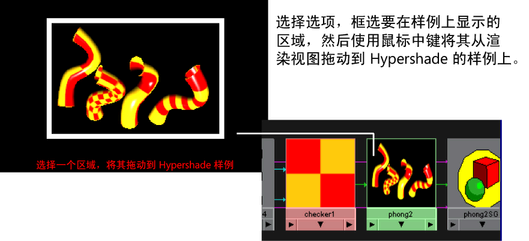

可以通过单击鼠标右键，从弹出菜单访问以下项目。
某些菜单项是渲染器专用的。例如，不会为 Maya 硬件 2.0 渲染显示 IPR 菜单项。
有关“渲染视图”(Render View)的详细信息，请参见关于渲染视图渲染。
“文件”(File)菜单
- 打开图像(Open Image)
-
将一个图像从磁盘加载到“渲染视图”(Render View)。图像通常以表明其图像格式的后缀结尾。
- 保存图像(Save Image)
-
将图像保存到磁盘的 /images 目录（如当前项目管理设置所指定）。
单击选项框
 以指定是保存原始颜色值还是应用视图变换或输出变换。
以指定是保存原始颜色值还是应用视图变换或输出变换。
- 打开 IPR 文件(Open IPR File)
-
打开文件浏览器导航到 iprImages 目录，从中可以打开已保存 IPR 文件并加载到“渲染视图”(Render View)。
注：请确保加载的 IPR 文件对应于当前场景文件。如果 IPR 文件中的曲面名称与当前场景中的相应曲面不匹配，将无法调整该曲面的着色特性。
- 保存 IPR 文件(Save IPR File)
-
将当前 IPR 文件保存到 iprImages 目录。
- 关闭 IPR 文件(Close IPR File)
-
关闭正在处理的 IPR 文件并结束当前 IPR 会话。
- 渲染诊断(Render Diagnostics)
-
显示的“脚本编辑器”(Script Editor)窗口将为您提供有关提高性能或避免某些限制的有价值信息。您可以在尝试不同设置的同时，或在开始最终渲染之前运行诊断。
- 保持渲染视图中的图像(Keep Image in Render View)
-
保持当前图像，以便您可以在随后查看并与最新渲染的图像进行比较。如果保持不止一张图像，窗口底部显示的滑块允许您将特定图像带到视图中，而无需加载该图像。结束 Maya 会话后，图像将丢失。
- 从渲染视图中移除图像(Remove Image from Render View)
-
从“渲染视图”(Render View)中关闭当前图像（并释放它所需的内存）。选择要使用滑块移除的图像。
- 从渲染视图中移除所有图像(Remove All Images from Render View)
-
从“渲染视图”(Render View)中关闭所有图像（并释放这些图像所需的内存），以便仅保留最近渲染的图像。
如果正在“渲染视图”(Render View)窗口中查看某个保存的图像，该选项仍会移除所有保存的图像，包括当前显示的图像。
“视图”(View)菜单
- 框显图像(Frame Image)
-
框显您正渲染的图像以适配“渲染视图”(Render View)。
- 框显区域(Frame Region)
-
框显您框选的区域以适配“渲染视图”(Render View)。
- 实际大小(Real Size)
-
自动调整视图，使缩放因子为 1.0，这样图像的每个像素在显示时占据一个像素。
- 显示选取框(Show Region Marquee)
-
显示红色渲染选取框。
- 重置选取框(Reset Region Marquee)
-
将渲染选取框重置为围绕整个图像。
- 向 Hypershade 抓取样例(Grab Swatch to Hypershade)
-
用于自定义 Hypershade 样例。自定义样例允许您快速访问场景及其所有关联属性。

“渲染”(Render)菜单
- 重做上一次渲染(Redo Previous Render)
-
渲染上次渲染的同一视图。如果上次渲染了一个区域，“重做上一次渲染”(Redo Previous Render)将渲染整个图像。
- 渲染区域(Render Region)
-
在“渲染视图”(Render View)中的某个区域周围绘制选取框时，选择该选项将只渲染该区域。如果已更改要执行快速测试渲染曲面的某个部分，这将非常有用。
- 渲染所有层(Render All Layers)
-
切换以渲染所有层或仅渲染选定层。
注： 仅当使用传统渲染层系统时才会显示此选项。请参见渲染设置与传统渲染层。 - 渲染所有层(Render All Layers) >

-
基于“渲染所有层选项”(Render All Layers Options)窗口中设置的选项渲染场景中的所有层。
- 合成层(Composite Layers)：渲染所有层的合成结果将显示在“渲染视图”(Render View)中。“渲染所有层”(Render All Layers)是默认选项。
- 合成并保持层(Composite and Keep Layers)：将所有层作为单独的图像进行渲染，但显示合成结果。
- 保持层(Keep Layers)：将所有层作为单独的图像进行渲染。
注： 仅当使用传统渲染层系统时才会显示此选项。请参见渲染设置与传统渲染层。 - 仅渲染选定对象(Render Selected Objects Only)
-
允许您仅渲染指定对象。选择要渲染的对象，并选择该选项。之前，这是“渲染设置”(Render Settings)窗口的“公用”(Common)选项卡中的“可渲染对象”(Renderable Objects)选项。
- 渲染(Render)
-
这将打开一个菜单，可以从中选择要渲染的视图，例如，透视视图、前视图、侧视图、顶视图或任何立体摄影机视图。
- 快照(Snapshot)
-
进行 IPR 渲染时不起作用。将打开一个菜单，可以从中选择视图。将对选定视图拍摄线框快照，并作为背景加载到“渲染视图”(Render View)中。然后，可以在快照背景前面框选要渲染的区域，并单击“渲染区域”(Render Region)图标。
提示：如果希望更加靠近查看结果，放大选择的视图。
“IPR”菜单
有关“IPR”的详细信息，请参见关于交互式真实照片级渲染 (IPR)。
- 重做上一次 IPR 渲染(Redo Previous IPR Render)
-
IPR 渲染上次 IPR 渲染过的同一视图。
- IPR 渲染(IPR Render)
-
将打开一个菜单，可以从中选择视图给 IPR 渲染。
- 更新阴影贴图(Update Shadow Maps)
-
重新生成阴影贴图并更新 IPR 图像。不能以交互方式调整阴影贴图。
- 更新图像平面/背景(Update Image Planes/Background)
-
使用您对图像屏幕所做的任何更改更新框选 IPR 区域。如果在更改图像平面后不选择该选项，更改的效果将在 IPR 中不可见，直到您执行新的 IPR 渲染或框选新调整区域。
- 刷新 IPR 图像(Refresh IPR Image)
-
基于所做的全部更改完全更新（重新着色）整个图像。刷新一次只能发生一点，因为加载整个图像的所有采样通常会使用过多内存。
IPR 调整选项(IPR Tuning Options)
指定在调整时要以交互方式更新场景的哪个特性。这些选项与“渲染设置”(Render Settings)窗口中的“IPR 选项”(IPR Options)相关。例如，如果在渲染设置窗口中禁用“渲染材质、灯光和辉光”(Render shading, lighting, and glow)，您将无法调整它们。
- 更新着色和照明(Update Shading and Lighting)
-
如果启用，则 IPR 图像会在您每次调整着色网络、灯光的属性，或进行着色组指定或移动灯光时更新。
- 更新着色器辉光(Update Shader Glow)
-
如果启用，则 IPR 图像会在您每次调整着色器辉光（后期处理）属性时更新。
- 更新灯光辉光(Update Light Glow)
-
如果启用，则会在您每次调整照明或灯光辉光属性时进行 IPR 数据更新。
- 更新 2D 运动模糊(Update 2D Motion Blur)
-
如果启用，则 IPR 图像会在您每次调整 2D 运动模糊属性时更新。修改场景的动画（例如，若要使对象的移动速度更快和增加模糊程度）不会影响 IPR 图像的运动模糊，因为修改动画会更改初始 IPR 渲染（运动向量被更改）所生成的信息，这将更改为可见性计算。必须执行新 IPR 渲染才能查看结果。
- 暂停 IPR 调整(Pause IPR Tuning)
-
暂停更新“渲染视图”(Render View)中的选定 IPR 区域。
“选项”(Options)菜单
某些菜单项是渲染器专用的。例如，不会为 Maya 硬件 2.0 渲染显示“忽略阴影”(Ignore Shadows)菜单项。
- 渲染设置(Render Settings)
-
当测试渲染（不是 IPR）时打开渲染设置窗口。
- 使用以下渲染器渲染(Render using)
-
选择用于渲染图像的渲染器类型。
- 测试分辨率(Test Resolution)
-
选择要渲染图像的分辨率。如果可能，使用降低的分辨率来测试渲染场景。另请参见测试渲染低分辨率静止图像或帧或测试渲染低分辨率动画
- 自动调整大小(Auto Resize)
-
允许“渲染视图”(Render View)每次在渲染时调整图像大小。启用后，始终在“渲染视图”(Render View)中心显示渲染图像，同时在图像适配的情况下以真实大小显示（一对一像素匹配）。禁用后，图像将始终显示在上一视图的同一位置。
- 自动渲染区域(Auto Render Region)
-
如果启用，在“渲染视图”(Render View)中完成框选后将立即渲染图像。这可以使渲染一个区域变成非常简单的过程：拖动渲染区域，然后该区域会在释放鼠标按钮后立即被渲染。
- 忽略阴影(Ignore Shadows)
-
告知 Maya 不测试渲染场景中的任何辉光。这可以加速测试渲染。
- 忽略辉光(Ignore Glows)
-
告知 Maya 不测试渲染场景中的任何辉光。这可以加速测试渲染。
“显示”(Display)菜单
- 红通道(Red Channel)、绿通道(Green Channel)、蓝通道(Blue Channel)
-
仅显示红、绿或蓝通道。
- 所有通道(All Channels)
-
显示 RGB 通道。
- 亮度(Luminance)
-
显示定义图像亮度级别的 R、G 和 B 平面加权平均。
- Alpha 通道(Alpha Channel)
-
仅显示 Alpha 通道。
- 立体显示(Stereo Display)
-
在使用立体摄影机渲染场景后（通过选择“渲染 > 渲染 > 立体摄影机装备”(Render > Render > stereoCamera Rig)），您可以以“立体图”(Anaglyph)和“自由视图(平行)”(Freeview (Parallel))等不同立体模式，或仅从左或右摄影机查看渲染输出。有关立体模式的详细信息，请参见面板菜单：“立体”(Stereo)。
渲染信息(Render Info)
选择要显示在“渲染视图”(Render View)中的渲染信息类型。
- 帧编号(Frame Number)
-
显示图像的帧编号。
- 渲染时间(Render Time)
-
显示渲染图像所花费的时间，例如 0:05（五秒钟）。
- 摄影机名称(Camera Name)
-
显示用于渲染图像的摄影机的名称。
- 层名称(Layer Name)
-
如果场景有渲染层，将显示图像中使用的层的名称。
- 渲染目标名称(Render Target Name)
-
如果场景有渲染目标，将显示正在渲染的渲染目标的名称。
- 自定义注释(Custom Comment)
-
将自定义文本添加到已渲染图像。当显示“自定义注释”(Custom Comment)时，输入文本到字段中，并单击“确定”(OK)。自定义注释将显示在图像底部。
- 抖动(Dithered)
-
禁用“抖动”(Dithered)可显示最好的图像版本。启用“抖动”(Dithered)可显示抖动图像（显示时不闪烁）。默认情况下“抖动”处于启用状态。
- 工具栏(Toolbar)
-
显示/隐藏“渲染视图”(Render View)工具栏。默认情况下启用工具栏。
渲染目标
- 无渲染目标(No Render Target)
-
选定后，渲染场景的当前帧。
- <渲染目标的名称>
- 选定后，渲染您选择的渲染目标的输出。如果 按钮被锁定，渲染渲染目标时仅刷新合成树。有关 按钮的详细信息，请参见渲染视图工具栏。